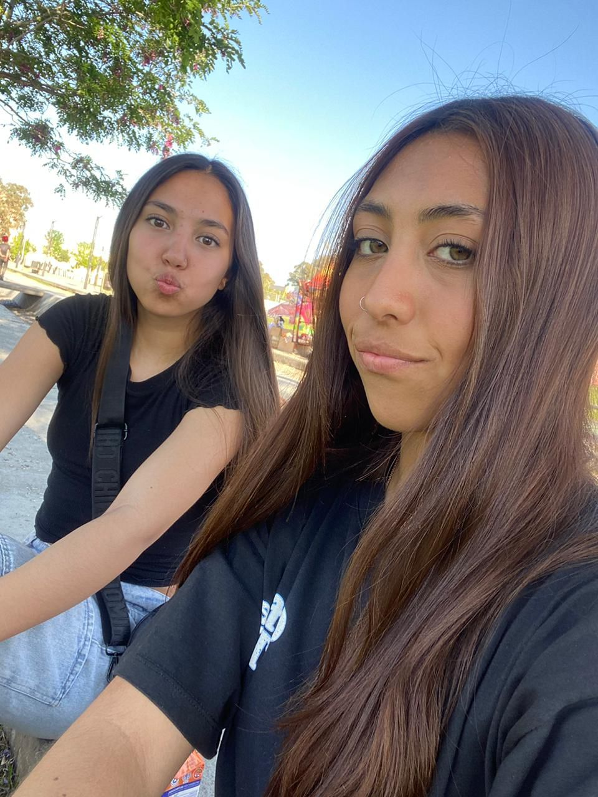
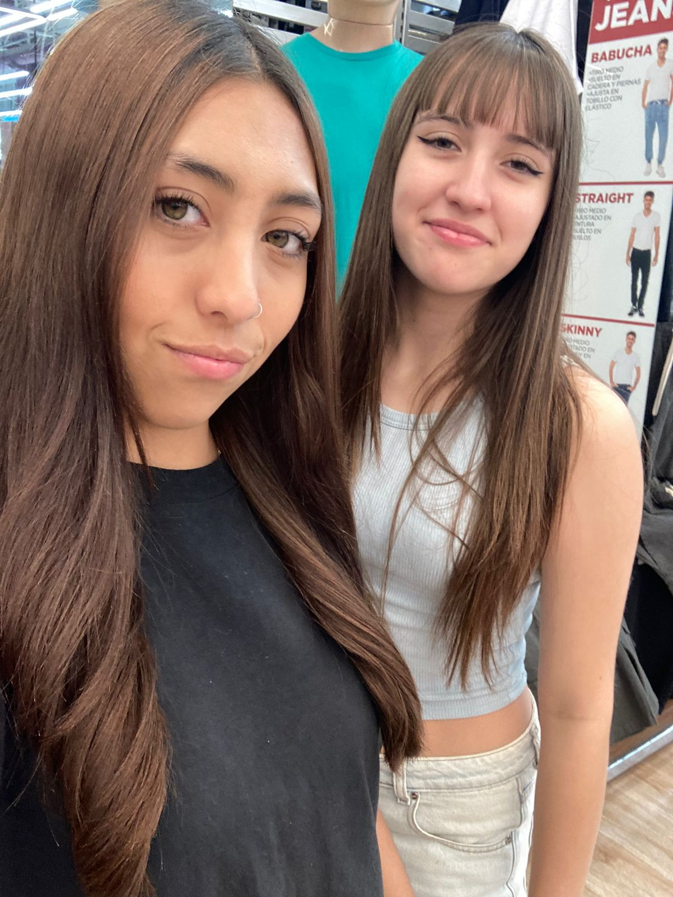
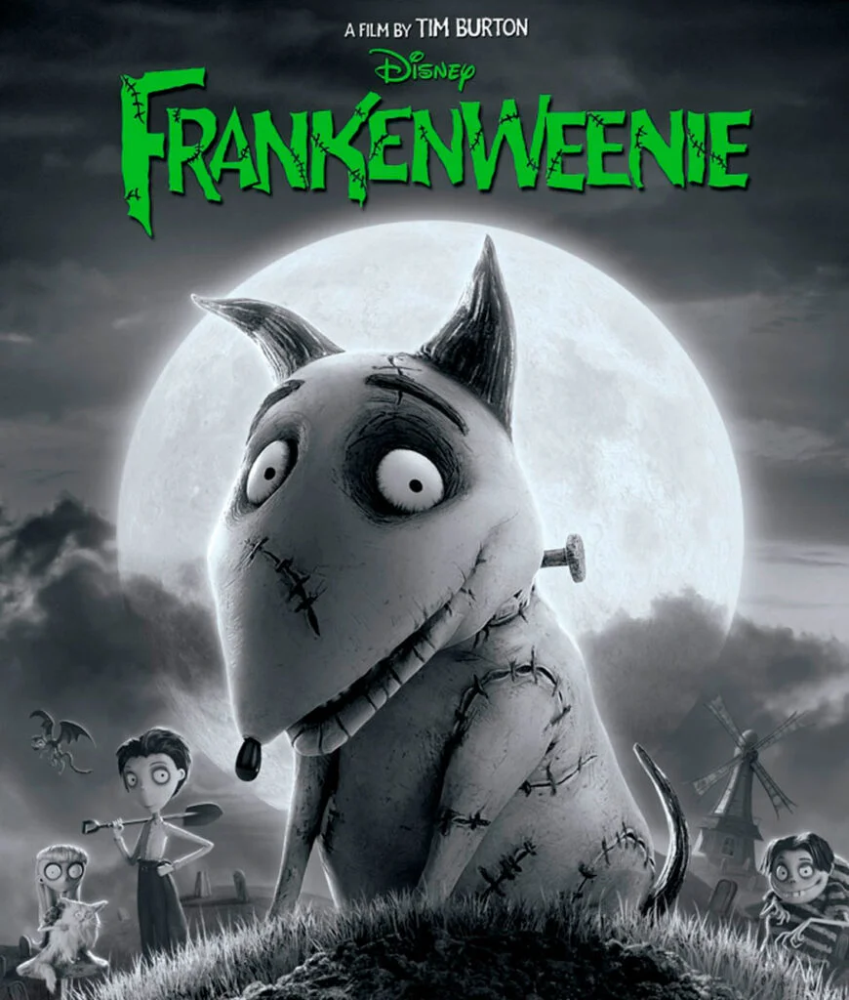
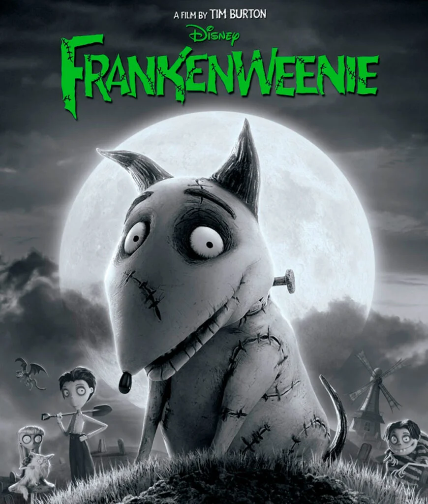

Mi nombre es Valentina Pichun Pelliza, tengo 17 años y naci el 16 de agosto del 2007.
Estudio en la epet20 y estoy cursando 5to año. Hice 5 años de voley pero tuve que dejar por el horario del colegio, y por ahora no estoy haciendo ningun deporte pero me gustaria volver a hacer.
Mi familia se conforma con mi mamá que se llama Mariela, mi papá que se llama Fabian, mi abuela que se llama Rosaura ( pero le decimos Patricia desde siempre), mis 3 hermanos que se llaman Diego(tiene 31 años), Joaquin(tiene 22 años) y Benjamin(tiene 12 años), mi gata que se llama Florita ,mi perro que se llama Roman, y el año pasado fallecio mi otro perrito que se llamaba Toby.
Por el momento vivo solamente con mi mamá y mi gata, pero voy a quedarme a la casa de mi papá algunos findes y visito a mi abuela casi todos los dias. Mis hermanos mas grandes tienen sus casas y el mas chico vive con su mamá, pero lo veo cuando voy a la casa de mi papá al igual que a mi perro.
Mi grupo de amigas se conforma por Lis, Romi, Juli, Jaz, Lu, More y Agos. Ellas son mis amigas que me acompañan todos los dias ( hacemos todo juntas).
Ellas son estas:
Despues estan mis mejores amigas desde chiquita que son Abril y Agos. A Agos la conozco desde que tengo un año y la concidero como una prima o una hermana, porque desde muy chiquitas compartimos todo. A Abril la conozco desde 4to grado, en 2020 nos dejamos de hablar pero en 2022 empezamos a hablar de vuelta, cuando la invite a mis 15, y desde ese momento no nos alejamos mas.
Esta es Agos:
Y esta es Abril:
Mi red social favorita es
la siguiente: instagram
Mis comidas favoritas son:
- El pure con milanesas
- El sushi
- La pizza
- La tarta de atun(de mi abuela)
- El pastel de papa(de mi mamá)
Mis canciones favoritas son:
- pensamientos
- aquella noche
- ruinas
- tratame suavemente
- putita
y los artistas o grupos que mas escucho son:
- cro
- barderos
- airbag
- soda estereo
- viejas locas
- Babasonicos
Mis peliculas favoritas son:
- El conjuro
- Frankenweenie
- Chesnut
- El diablo viste a la moda
Las portadas de mis peliculas favoritas son las siguientes:
 
